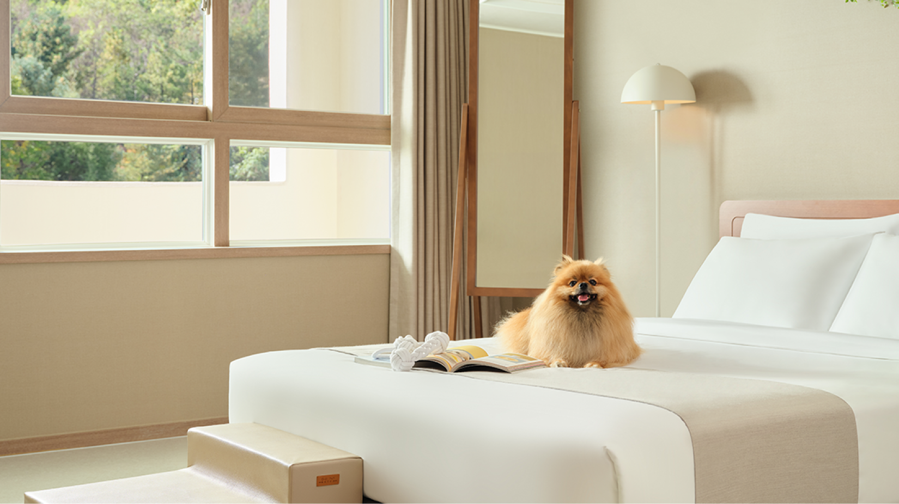
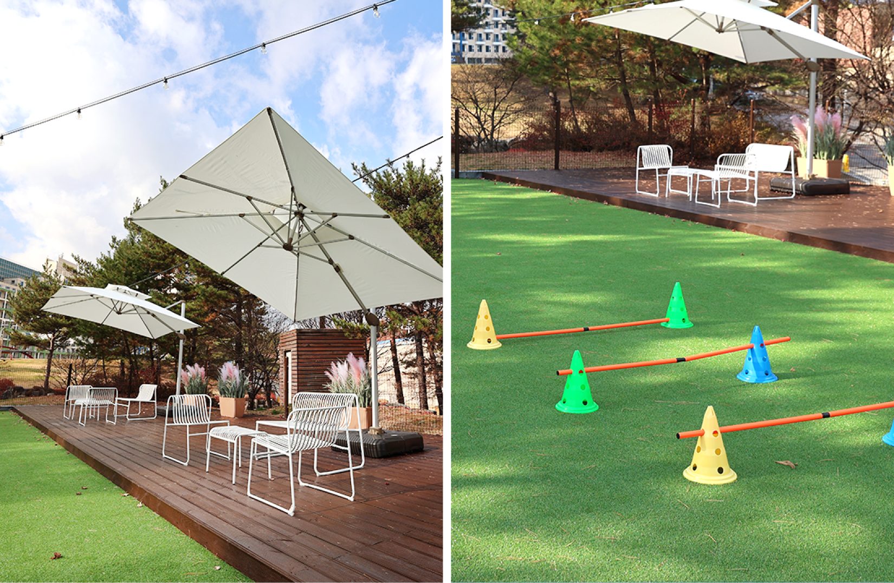
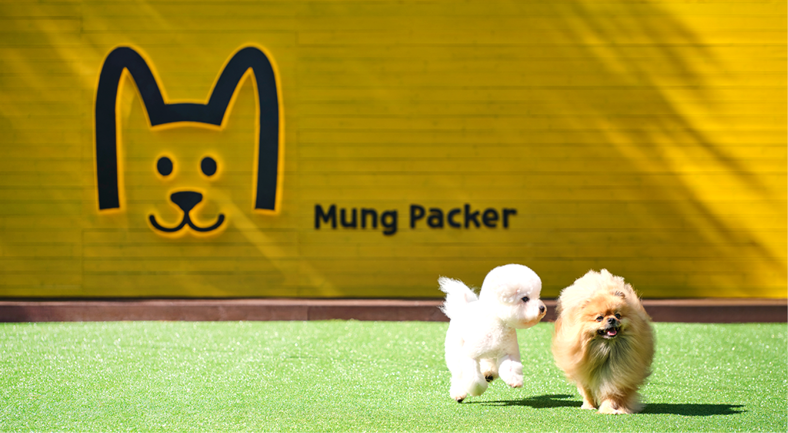

평창, 선물 같은 휴식 펫캉스
힘든 하루를 보내고 집에 들어가면 꼬리를 흔들며 가장 먼저 우리를 반겨주는 사랑하는 나의 가족. 집을 비운 시간 동안 나만을 기다렸을 나의 친구이면서 동생이자 우리의 자녀가 되기도 하는 반려동물은 이제 우리와 모든 것을 함께 하며 살아가고 있다. 하지만 여행은 어떨까?
날이 더워지면 시원한 곳으로 피서를 가는 여름에도 하얀 눈꽃이 만발하는 아름다운 겨울에도 우리는 모두 사랑하는 이들과 여행을 꿈꾼다. 그리고 가족여행, 커플 여행에는 사랑스러운 나의 반려견도 빠질 수 없다. 하지만 현실은 모든 가족이 함께 갈 수 없다는 것이다. 여행을 떠나기 전 우리는 다른 누군가에게 반려동물을 맡기거나 애견호텔 혹은 강아지 유치원을 알아보고 믿고 맡길 수 있는 곳에 돈을 지불하면서 불편한 마음으로 여행을 떠나곤 한 기억이 있을 것이다. 무거운 마음으로 가족여행을 떠났던 수많은 반려동물 가구들에게 평창은 선물 같은 여행지가 되어줄 것이다. 한화리조트(평창)과 휘닉스평창의 ‘펫 캉스’ 상품은 여행의 처음과 끝을 반려동물과 함께하며 즐길 수 있도록 준비되어 있다. 온 가족이 함께 즐기는 편안한 시설뿐만 아니라 평창의 푸르고 깨끗한 자연에서의 시간은 덤으로 얻어 갈 수 있다.

오직 멍을 위한 멍에 의한 멍의 여행 ‘멍패커’
한화리조트(평창)의 ‘멍패커’ 상품은 반려견과 이용하기에 불편함이 전혀 없는 넓고 다양한 객실 사이즈는 물론이고 대형 평형의 객실에서는 영화를 볼 수 있는 시네마 시설이 갖추어져 있다. 객실 안에서는 반려견과 견주 모두가 온전한 휴식을 즐길 수 있도록 되어있다. 리클라이너 쇼파와 시네마 빔은 마치 개인 영화과에 온 듯 편하게 영화 감상을 할 수 있도록 해주고, 맛있는 음식과 사랑하는 사람들과 반려동물 모두가 오롯이 ‘우리’만의 공간에서 편안한 시간을 보낼 수 있다. 그 뿐만 아니라 체크인을 하고 객실로 들어가는 모든 곳에서 반려동물을 배려한 세심한 부분들이 마음을 사로잡는다.
한화리조트(평창) 4층 전부가 펫 프랜들리 객실로 준비가 되어있어서 강아지에 거부감이 있는 다른 손님들과 마주쳐 피해를 줄까 우려하지 않아도 되고 객실에는 강아지 유모차가 준비되어 있어서 몸도 마음도 편하게 외출을 할 수 있다. 객실 입구에 안전 문이 설치되어 있어 혹시 모르는 사고를 대비할 수 있을 뿐만 아니라 객실 내에 들어가면 마치 이미 강아지를 키우고 있는 집에 놀러 온 것 같은 기분이 든다. 바로 강아지를 위한 작은 배려들 때문이다. 쇼파나 침대에 오르내릴 때 소중한 나의 반려견의 슬개골을 지켜줄 슬라이드와 계단은 물론, 바닥재 역시 쉽게 미끄러지지 않는 소재를 사용하여 마음껏 뛰어놀 수 있도록 되어있다. 혹시 배변패드를 깜빡했다면 그 또한 걱정할 필요 없다. 강아지를 위한 식기와 배변패드까지 완벽하게 준비되어 있고 신나게 놀다가 지치면 언제든 누워서 쉴 수 있는 강아지 방석도 준비되어 있다. 마치 자기 자리를 아는 듯이 그곳에서 쉬고 있는 강아지를 보고 있는 것만으로도 힐링이 되는 기분을 느낄 수 있다.
멍들의 MBTI에 맞춘 안전한 놀이터
객실에서 충분히 쉬면서 충전을 했다면 이제 밖에서 그 에너지를 분출할 차례이다. 매일 하네스와 목줄을 하고 걷던 산책이 아닌 넓은 멍패커 놀이터에서 다른 친구들과 자유롭게 뛰어놀 수 있다. 이곳에서도 멍패커 이용객들을 위한 배려를 찾을 수 있는데 바로 활동적이지 않은 강아지들을 위한 반려견 배려 구역이다. 겁이 많거나 사회성이 부족한 강아지들도 걱정 없이 분리된 공간에서 주인과 즐거운 시간을 보낼 수 있다. 또 함께 뛰어놀다가 지치면 앉아서 쉴 수 있는 공간도 준비되어 있다. 놀이터는 아쉬워할 수 있는 강아지들을 위해 객실에서 쉬다가 언제든 뛰어놀 수 있도록 저녁과 아침에도 자유롭게 즐길 수 있다. 마음껏 뛰어 논 후에는 객실에서 영화를 보고 휴식을 취할 수 있다는 것도 큰 매력이다.
‘멍패커’ 객실 안내 책자에는 반려동물과 함께 갈 수 있는 여행지와 식당, 카페에 대한 정보가 있어 여행 계획도 쉽게 세울 수 있다. 첫날엔 리조트의 시설들을 즐겼다면 둘째 날은 강아지들과 자유롭게 여행할 수 있는 평창의 관광지를 둘러보는 것을 추천한다. 그전에 일단 배를 두둑이 채워야 하는데 반려동물과 식당 외출이 어려운 여행자들을 배려한 룸 다이닝 서비스를 맛볼 차례이다. 다양한 메뉴로 구성된 조식은 음료부터 메뉴 구성까지 온 가족의 입맛을 사로잡기에 충분하다. 먹는 사람의 기분마저 좋아지게 하는 정성스러운 포장과 메뉴 구성은 ‘멍패커’ 여행객들에게 웃으며 휴식의 마침표를 찍을 수 있게 해준다.
